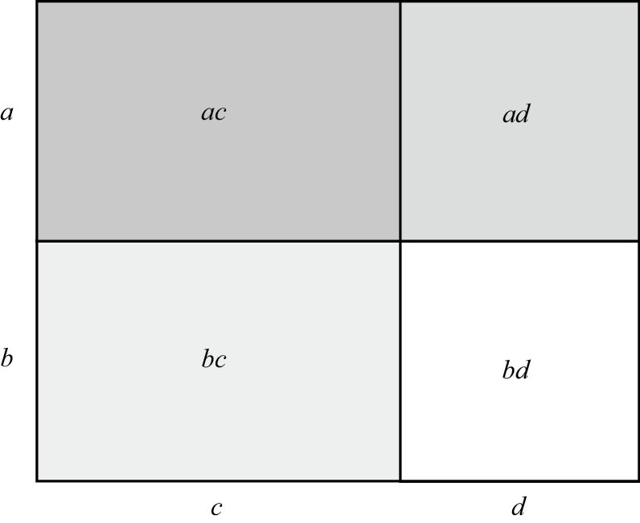
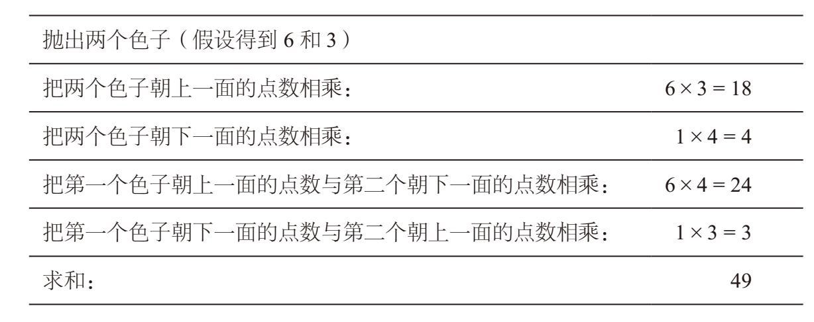
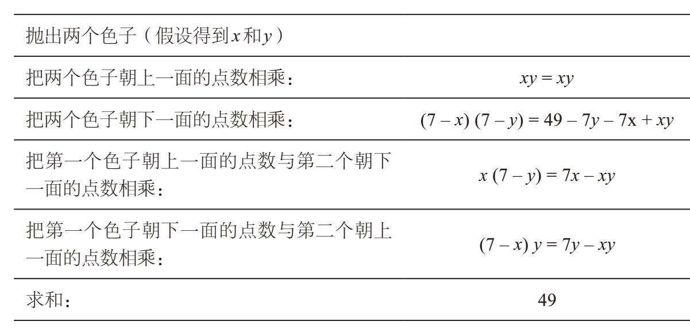
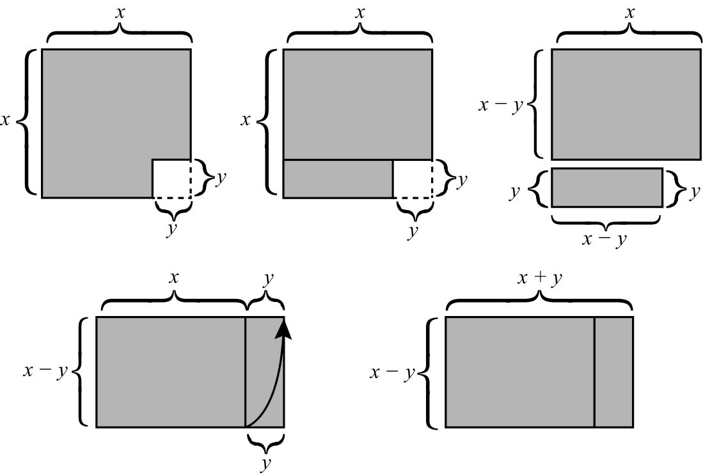

代数中的FOIL法则是分配律产生的一个重要结果。对于任意变量a、b、c、d，都有：
(a + b) (c + d) = ac + ad + bc + bd
FOIL是“First–Outer–Inner–Last”（首—外—内—末）的英文首字母缩写。在上式中，ac是 (a + b) (c + d)的两个首项的乘积，ad是外侧的两项乘积，bc是内部的两项乘积，bd是两个末项的乘积。
下面，我们利用FOIL法则来求两个数字的乘积：
23×45 = (20 + 3)×(40 + 5)
=20×40 + 20×5 + 3×40 + 3×5
= 800 + 100 + 120 + 15
= 1 035
FOIL法则为什么成立呢？根据分配律（我们把求和的部分写到前面），可以得到：
(a + b) e = ae + be
如果用c + d 代替e，上式就会变成：
(a + b) (c + d) = a (c + d) + b (c + d) = ac + ad + bc + bd
而且，在最后一步运算中再次应用了分配律。如果大家愿意，也可以利用几何证明法（在a、b、c都是整数时）。请利用两种不同的方法计算如下长方形的面积。

一方面，长方形的面积是 (a + b) (c + d)。另一方面，我们可以将大长方形分成4个小长方形，它们的面积分别是ac、ad、bc和bd。因此，大长方形的面积又等于ac + ad + bc + bd。把这两个面积的表达式放在一起，就得到了FOIL法则。
下面，我向大家介绍FOIL法则的一个奇妙应用。按照下列指示，抛掷两个色子。假设你抛出这两个色子之后，一个色子朝上的一面是6个点，另一个是3个点。它们朝下的一面分别是1个点和4个点。

在这个例子中，最终得数是49。大家随便找两个普通的六面体色子，重复上述步骤，最后的得数都是一样的。这是因为，每个普通色子相对两面的点数之和都等于7。因此，当色子朝上一面的点数是x和y时，那么朝下一面的点数就必然是7 – x和7 – y。利用代数知识，上述步骤就会变成：

请注意，在第三步我们应用了FOIL法则（还请注意，–x乘以–y得到正的xy）。换一个代数运算较少的方法，最终也能得出49。观察每一步，就会发现上述各个等式的左边正好是利用FOIL法则展开［x + (7 – x)］［y + (7 – y)］后得到的4项。
在课堂上学习代数时，FOIL法则在大多数情况下都被用来计算下面这种乘法算式：
(x + 3) (x + 4) = x2 + 4x + 3x + 12 = x2 + 7x + 12
我们注意到，在最终的算式中，7［被称作x项的“系数”（coefficient）］正好是数字3和4的和，12［被称作“常数项”（constant term）］则是3和4的乘积。例如，由于5 + 7 = 12，5×7 = 35，因此我们立刻就可以得出：
(x + 5) (x + 7) = x2 + 12x + 35
这个规律对于负数同样有效，下面我列举几例。在第一个例子中，我们使用的是6 + (–2) = 4和6×(–2) = –12这个事实。
(x + 6) (x – 2) = x2 + 4x – 12
(x + 1) (x – 8) = x2 – 7x – 8
(x – 5) (x – 7) = x2 – 12x + 35
以下是数字相同时的乘法算式实例。
(x + 5)2 = (x + 5) (x + 5) = x2 + 10x + 25
(x – 5)2 = (x – 5) (x – 5) = x2 – 10x + 25
请注意，(x + 5)2 ≠ x2 + 25！代数初学者经常误认为两者是一回事。与此同时，当这些相同数字前面的正负号正好相反时，就会出现一个有趣的现象。例如，由于5 + (– 5) = 0，因此：
(x + 5)(x– 5) = x2 + 5x – 5x – 25 = x2 – 25
总的来说，平方差（difference of squares）公式值得我们背下来：
(x + y)(x – y) = x2 – y2
我们在第1章学习平方数的简便运算时用过这个公式，当时依据的代数知识是：
A2 = (A + d) (A – d) + d2
我们先验证这个公式是否成立。根据平方差公式，我们发现[ (A + d) (A – d )] + d2 =（A2 – d2） + d2 = A2。因此，无论A和d的值是多少，该公式都成立。在实际应用中，A是平方运算的底数，d是该数与其最接近的简便数字之差。例如，在求97的平方数时，我们取d = 3，于是：
972 = (97 + 3)(97 – 3) + 32
= (100×94) + 9
= 9 409
下面，我们通过图形来验证平方差公式是否成立。从下图可以看出，面积为x2 – y2的几何图形经过切割、拼接之后，可以变成一个面积为(x + y)(x – y)的长方形。

我们在第1章学过计算彼此接近的两个数字乘积的简便方法。当时，我们强调这两个数字都接近100，或者首位数相同。一旦理解了这个算法背后的代数原理，我们就可以进一步扩大它的应用范围。下面，我们讨论就近取整法的代数原理。
(z + a) (z + b) = z (z + a + b) + ab
这个公式之所以成立，是因为(z + a) (z + b) = z2 + zb + za + ab，从前三项中提取z，即可得到上述公式。尽管这些变量取任何值时,该公式都成立，但我们通常会为z选择个位数是0的值。例如，在解43×48这道题时，令z = 40，a = 3，b = 8。于是：
43×48 = (40 + 3) (40 + 8)
= 40 (40 + 3 + 8)+ (3×8)
= 40×51 +3×8
= 2 040 + 24
= 2 064
注意，原题中的两个乘数之和为43 + 48 = 91，而简便计算中的两个乘数之和也是40 + 51 = 91。这并不是巧合，因为根据代数运算的结果，原来的两个乘数之和为(z + a) + (z + b) = 2z + a + b，简便运算中两个乘数z与z + a + b的和也是2z + a + b。根据这个代数原理，我们发现向上取整也可以降低运算的难度。例如，在解43×48这道题时，也可以令z = 50，a = –7，b = –2，把其变成50×41。（只要知道43 + 48 = 91 = 50 + 41，就可以方便地确定41这个数值。）于是：
43×48 = (50 – 7) (50 – 2)
= (50×41) + (–7)×(–2)
= 2 050 + 14
= 2 064
在第1章中，我们利用这个方法计算两个略大于100的数字的乘积。其实，计算两个略小于100的数字的乘积时，这个方法同样有效。例如：
96×97 = (100 – 4) (100 – 3)
= (100×93) + ( – 4)×( – 3)
= 9 300 + 12
= 9 312
请注意，96 + 97 = 193 = 100 + 93。（在实际应用时，我只看两个数字的末位数，在这个例子中是6 + 7，这表明与100相乘的那个数字的末位数是3，因此我知道这个数字必然是93。）而且，在熟练掌握这个方法之后，我们就无须计算两个负数的乘积，而是直接取它们的正值，再求它们的乘积。例如：
97×87 = (100 – 3) (100 – 13)
= 100×84 + 3×13
= 8 400 + 39
= 8 439
在一个乘数略大于100，而另一个乘数略小于100时，也可以应用这个方法。但在这种情况下，最后一步是减法运算。例如：
109×93 = (100 + 9) (100 – 7)
= 100×102 – 9×7
= 10 200 – 63
= 10 137
同样，其中的102可以通过109 – 7或93 + 9或109 + 93 – 100等方法得到（还可以通过对原来两个乘数的末位数进行加法运算的方式得到：9 + 3告诉我们这个数字的末位数应该是2，有了这个信息，我们就可以做出判断了）。在实践中，我们可以利用这个方法完成任意两个比较接近的数字的乘法运算。下面，我再举两个有一定难度的三位数乘法的例子。注意，在这两个例子中，数字a和b都不是一位数。
218×211 = (200 + 18) (200 + 11)
= 200×229 + 18×11
= 45 800 + 198
= 45 998
985×978 = (1 000 – 15) (1 000 – 22)
= 1 000×963 + 15×12
= 963 000 + 330
= 963 330